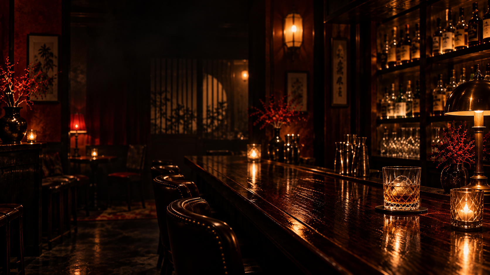
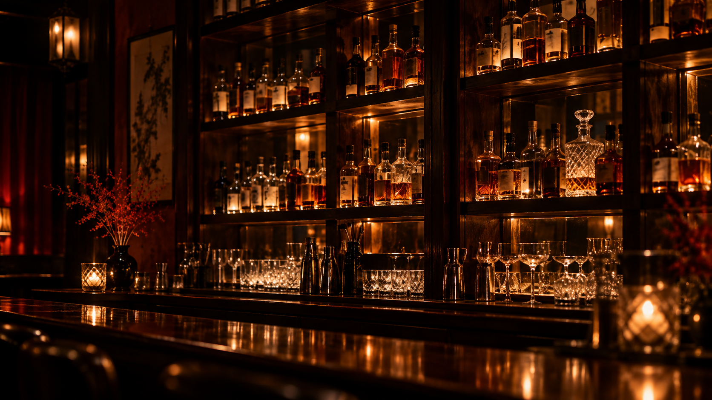
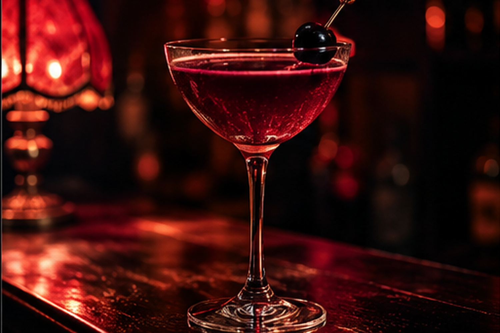
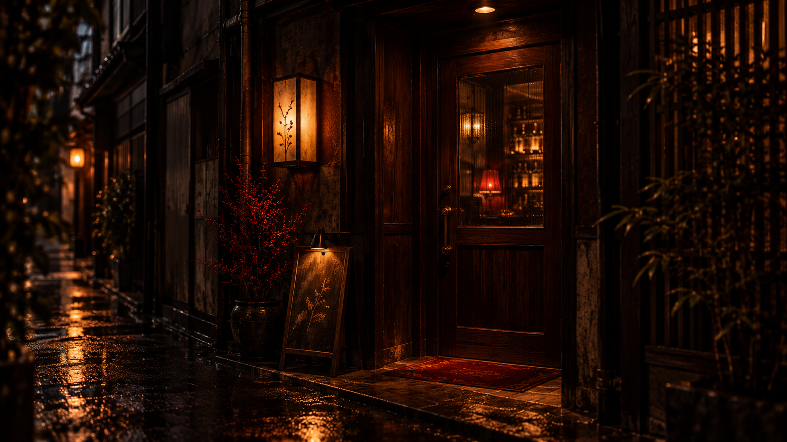

02 / WEB DESIGNMOOD — DARK — EMOTION
夜半YOWA
空気を、設計する。
架空のバーWebサイト / BAR WEBSITE
01CONCEPT / コンセプト
来店前から、空気感を体験する。
ダーク・昭和レトロ・ミステリアス。写真・配色・文字・余白・静かな動きで、夜半という場所の世界観を伝える。
02PURPOSE / 目的
店舗の世界観をWeb上で表現し、来店意欲につなげる。店舗情報とともに、その場所で過ごす時間を想像できる体験を目指した。
03TARGET / ターゲット
20代後半〜50代。落ち着いたバー、昭和レトロ、静かな高級感、非日常感、ミステリアスな空間を好む人。
04VISUAL DIRECTION / 表現設計
黒と深紅に琥珀色の光。明朝体、縦書き、大きな余白、昭和広告を思わせる線で、妖しさと高級感を重ねる。
BLACKDEEP REDAMBERIVORY
05SITE PREVIEW / サイト全景

06GALLERY / 世界観のディテール



07DESIGN POINT / 工夫した点
黒・深い赤・琥珀色と明朝体、余白、静かなアニメーションによって妖しさと高級感を表現。
非対称ギャラリー、架空マップ、控えめな赤・金のCTAなど、細部まで世界観を統一した。
08ROLE / 担当範囲
企画 / コンセプト設計 / ターゲット設定 / 情報設計 / コピー / Webデザイン / 画像制作 / Web実装 / レスポンシブ対応 / UI・UX